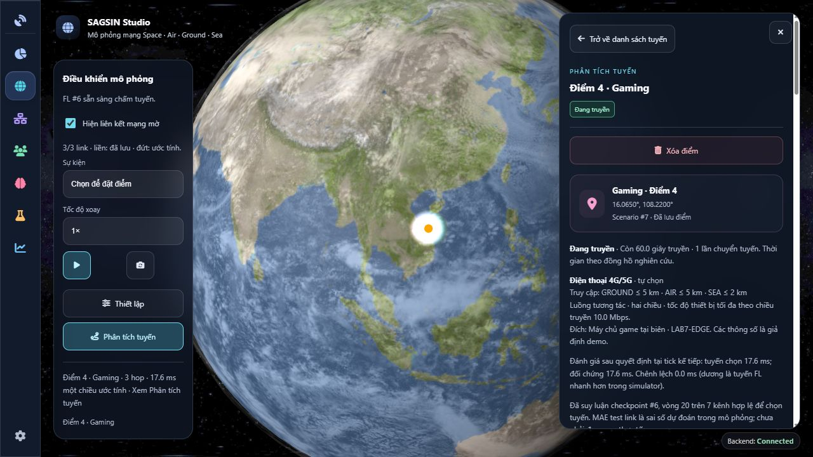

25/10/2026 · Scenario #7 · Experiment #6 · dữ liệu mô phỏng.
6 client: 3 GROUND, 1 AIR, 1 SEA, 1 SPACE. 2.000 lịch sử + 20 online/client; tổng 12.120 mẫu = 7.200 train + 2.400 validation + 2.400 test + 120 online. 20 vòng FL, 2 local epoch, batch 64, seed 42.
Input: telemetry link tại t và payload. Output: độ trễ một chiều cùng link/payload tại t+1. Nhãn tương lai không đi vào input. FedAvg tổng hợp trọng số; chi phí truyền model tính riêng. Dữ liệu được lưu tập trung để mô phỏng/audit; chưa triển khai FL trên thiết bị phân tán thực.
MAE FL 0.130392 ms; persistence 0.129412 ms; RMSE 0.216795 ms. FL chưa tốt hơn persistence.
Điện thoại → ACCESS (truy cập tối đa 5 km) → RELAY → EDGE; hoặc qua UAV; hoặc SHIP → SAT → EDGE. Chỉ ACCESS tiếp nhận thiết bị, chỉ EDGE đặt dịch vụ. 7 link cấu hình; không kết nối tất cả client với nhau. Vệ tinh 550 km có backhaul dài theo hình học; điện thoại không nối trực tiếp lên vệ tinh. Vùng backbone 100 km không đồng nghĩa toàn vùng có phủ sóng di động.
Kiểm tra vùng phủ, tầm nhìn, dung lượng và đích dịch vụ trước; checkpoint FL chấm các kênh hợp lệ. Đường đi tối thiểu tính cả độ trễ, băng thông và khoảng cách.
Message, load_ratio 0, clock 0. Đối chứng dùng telemetry hiện tại; hai tuyến được đánh giá sau quyết định bằng cùng simulator ở t+1, gồm xử lý hai đầu. Các ca có tuyến đều chọn cùng đường; chưa chứng minh FL cải thiện định tuyến.
| condition | code | route | baseline | selected_realized_ms | baseline_realized_ms | difference_ms |
|---|---|---|---|---|---|---|
| normal | ok | LAB7-ACCESS > LAB7-UAV > LAB7-EDGE | LAB7-ACCESS > LAB7-UAV > LAB7-EDGE | 18.35860583441648 | 18.35860583441648 | 0.0 |
| congested | ok | LAB7-ACCESS > LAB7-UAV > LAB7-EDGE | LAB7-ACCESS > LAB7-UAV > LAB7-EDGE | 19.408745533963646 | 19.408745533963646 | 0.0 |
| terrestrial_failure | ok | LAB7-ACCESS > LAB7-UAV > LAB7-EDGE | LAB7-ACCESS > LAB7-UAV > LAB7-EDGE | 18.35860583441648 | 18.35860583441648 | 0.0 |
| satellite_fallback | ok | LAB7-ACCESS > LAB7-SHIP > LAB7-SAT > LAB7-EDGE | LAB7-ACCESS > LAB7-SHIP > LAB7-SAT > LAB7-EDGE | 24.34297767070798 | 24.34297767070798 | 0.0 |
| disconnected | no_path |
Simulation → Thiết lập → Mở khu vực nghiên cứu SAGSIN → chọn sự kiện → Thử sự kiện gần trạm trong vùng đã học. Chọn tình huống nghẽn/đứt/dự phòng; Chạy đồng hồ hoặc Tiến 10 giây. UI cập nhật mỗi 2 giây.
Đang truyền giữ băng thông. Mất tuyến giải phóng và chờ/thử lại có thời hạn. Hoàn tất hoặc hết hạn đều không chiếm băng thông. Backend dùng một đồng hồ chung, một worker; pause thì thời lượng không giảm.
Điểm #27 hoàn tất sau 10 s; #28 chờ mất backhaul rồi truyền khi phục hồi; #29 chuyển từ mặt đất sang tàu–vệ tinh một lần và hoàn tất. #30 là phiên demo giữ ở đồng hồ tạm dừng.
Training JSON · 5 ca định tuyến JSON · CSV đối chiếu · Vòng đời API · Phiên UI
Vệ tinh là snapshot cố định; telemetry/hàng đợi tổng hợp; chưa mô phỏng RF, gói tin hay quỹ đạo liên tục. Model học backbone, kênh UE chưa có tập đo riêng. 107 kiểm thử qua; 3 kiểm thử khu vực chạy lại sau dọn mã.
